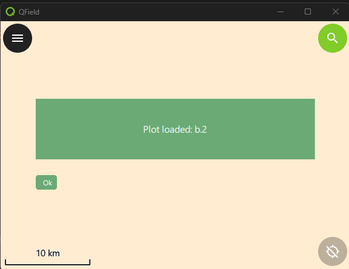

Demo 2
Feature-Auswahl

Interaktion mit der Karte und Features
Was wir lernen werden
- Wie man über die QField-Schnittstelle auf einen Projekt-Layer zugreift
- Wie man Features aus einem Layer abfragt
- Wie man Objekte vom Map-Canvas mit pointHandler auswählt
1. Layer Abfrage über qgisProject Objekt
// imports qgisProject
import org.qfield
// get QgsVectorLayer by name
let layer = qgisProject.mapLayersByName("plots")[0]
- qgisProject ist ein echte QgsProject Typ
- C++ Class Reference bezeichnet Funktionen mit Q_INVOKABLE, die in Javascript (und QML) aufrufbar sind
1. Feature Abfrage über LayerUtils
//imports LayerUtils
import org.qfield
// build your expression just like in QGIS
let expression = "plot_id = 'plot_123'"
// create feature iterator from expression
let it = LayerUtils.createFeatureIteratorFromExpression(layer, expression)
if (it.hasNext()) {
// Real QgsFeature
const feature = it.next()
it.close()
}
it.close();
- createFeatureIteratorFromExpression gibt ein echtes QgsFeature Iterator Objekt zurück
- it.next() gibt ein echtes QgsFeature Objekt zurück
- Niemals vergessen, den Iterator zu schließen (Crash vermeiden)
Karteninteraktionen abfangen mit pointHandler
// imports iface
import org.qfield
Item {
// 1. Add the pointHandler to the plugin
property var handler: iface.findItemByObjectName("pointHandler")
Component.onCompleted: {
// 2. register the point handler and define its callback
handler.registerHandler("demo2_selection", (point, type, interactionType) => {
if(point === "the right point"){
// block other handlers
return true
}
else {
// not using the point, pass event to other handlers
return false
}
}
});
// 3. Deregister the point handler on destruction (project close)
Component.onDestruction: {
handler.deregisterHandler("demo2_selection");
}
}
Karteninteraktionen abfangen mit pointHandler
- 1. Hole pointHandler von iface.findItemByObjectName("pointHandler")
- 2. Registriere den pointHandler und definiere den Callback
- 3. In Callback, gebe true zurück, um das Event zu verbrauchen, oder false, um es weiterzugeben
- 4. Deregistriere den pointHandler bei Zerstörung (Projekt schließen)
Point Handler interactionType
var shouldHandle = (Qt.platform.os === "windows" && interactionType === "clicked") ||
(Qt.platform.os !== "windows" && interactionType === "doubleClicked")
- "clicked":
- Windows: Funktioniert
- iOS: Feature-Drawer erscheint über Plugin
- "doubleClicked":
- Windows: Ignoriert
- iOS: Funktioniert
- "pressAndHold":
- Windows: Ignoriert
- iOS: Objekt-Kontextmenü blockiert Plugin.
Point Handler Koordinaten
let mapCanvas = iface.mapCanvas()
handler.registerHandler("demo2_selection", (point, type, interactionType) => {
// 20 pixel tolerance box
let tl = mapCanvas.mapSettings.screenToCoordinate(Qt.point(point.x - 20, point.y - 20))
let br = mapCanvas.mapSettings.screenToCoordinate(Qt.point(point.x + 20, point.y + 20))
let topleft = tl.x + " " + tl.y
let topright = br.x + " " + tl.y
let bottomright = br.x + " " + br.y
let bottomleft = tl.x + " " + br.y
let wkt = "'POLYGON((" + topleft + ", " + topright + ", " + bottomright \
+ ", " + bottomleft + ", " + topleft + "))'"
let expression = "intersects(geom_from_wkt("+wkt+"), $geometry)"
let it = LayerUtils.createFeatureIteratorFromExpression(layer, expression)
}
Daten an Component übergeben
Loader {
id: pluginLoader
source: Qt.resolvedUrl('./components/d2_plugin_component.qml')
}
pluginLoader.item.plotId = feature.attribute("plot_id")
pluginLoader.item = Root-Element der Component
Property-Bindung in Component
// d2_plugin_component.qml
Rectangle {
id: pluginFrame
property string plotId: ""
Text {
id: messageBox
text: "Plot loaded: " + pluginFrame.plotId
// Automatisch aktualisiert!
}
}
Merke das Unterschied zu den Imperative Assignment: Property-Bindung macht UI-Updates automatisch!
Benutzerdefinierte Signale
Plugin mit Button schließen:
// In Component: Signal definieren
Rectangle {
id: pluginFrame
signal closed()
Button {
onClicked: { closed() }
}
}
// Im Plugin: Signal verbinden
Item {
id: plugin
Loader{}
Connections {
target: pluginLoader.item
function onClosed() {
pluginLoader.active = false
}
}
}
Zu viele verschiedene Mechanismen für Interaktionen? Ja, denke ich auch.
Übungen für die nächsten 20 Minuten
Aufgaben:
- Übung 1: Demo2-Plugin bereitstellen und testen
- Übung 2: Pixel Koordinaten und Map Koordinaten anzeigen in Text anzeigen
- Übung 3: Ich zähle 3 Mechanismen für Signal/Slot Interaktionen. Wieviel kennst Du?
- Übung 4: Was ist der Unterschied zwischen Property Binding und Imperative Assignment?
📚 Detaillierte Code-Beispiele im Markdown-Material: guide\demo2\demo2_intro_DE.html